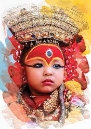

UNESCO HERITAGE SITES
Be a part of an amazing experience; visit architecturally and culturally rich heritage sites in Kathmandu Valley and Lumbini, the birthplace of the Buddha. Enjoy the scenic wilderness amidst the spectacular flora and fauna of Nepal's Himalaya in the Sagarmatha National Park or head for the serene Chitwan National Park for sightings of diverse wildlife. Whether you are a nature lover or a culture enthusiast, there's something for everyone here.
UNESCO has listed 4 World Heritage Sites in Nepal; Chitwan National Park and Sagarmatha National Park are listed as UNESCO Natural World Heritage Sites; 7 sites in Kathmandu Valley counted as one and Lumbini – the birthplace of Lord Buddha are listed as UNESCO Cultural World Heritage Sites.
Enter the historical grounds of the Kathmandu Durbar Square, which is in the heart of the Capital city, and visit the old Palace which was the seat of power of the Malla and Shah Dynasties until a new palace was built. Get a glimpse of the Living Goddess Kumari at the Kumari Ghar, her residence. Or visit the equally enthralling Patan or Bhaktapur.
The earthquake of April 2015 damaged many old palaces, temples and monuments, and they are all presently being restored. However, despite the damage, much of the rich history and heritage of the Malla dynasty, the foremost pioneers of art and culture in the valley can still be seen. The architectural beauty and exquisite wood carvings can be admired by visitors walking around Kathmandu Durbar Square. Be a part of vibrant festivals which are still celebrated with boisterous joy by the local Newar communities.
Take a tour around Patan Durbar Square where you can walk through the old gallis (alleys), where timeless wood and stone carvings of hundreds of Hindu and Buddhist deities greet you from every temple wall. Admire the countless designs on wood carved windows and the architectural achievements of Newar craftsmen of centuries ago. The stone carved Krishna temple, the amazing craftsmanship in the old Malla palace and the row of pagoda temples enriching the Durbar Square are a sight to see.
The Bhaktapur Durbar Square is even more beautiful, with its 55 Windows Palace, statue of King Bhupatindra Malla, Art Gallery with antiques and temples of stone and woodcarvings and the resplendent Golden Gate all built during the reign of Malla kings. The other squares are famous for the five-story Nyatapola Temple that withstood two devastating earthquakes and the Dattatreya Square with its famous Peacock Window, the Woodcarving Museum and the Brass & Bronze Museum.
Just outside Bhaktapur, one of the major attractions and a World Heritage site is the Changu Narayan Temple, 12 km east of Kathmandu. This place is worth a visit as Changu Narayan is the oldest temple in Nepal, which according to historians has been in existence since 464 AD. Take a side trip from Bhaktapur to enjoy the rich archaeological relics and stone carvings, which are the oldest epigraphs related to Nepal's history.
If you want to experience Buddhism, then visit Swayambhu also popularly known as the Monkey Temple, or visit Baudha, and enjoy a blissful time in these ancient places of worship away from the noise and chaos of the city. Spin the hundreds of prayer wheels that surround the main domes and be a part of spiritual incantations and prayers that take place in the evenings. Light oil lamps and say prayers for a loved one.